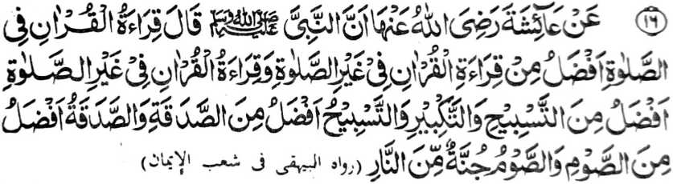

Miyakathitayan ko A’isha (Radhiallaho ‘Anha) a pitharo iyan a mata-an a so Nabi (Sallallaho ‘Alaihi wa Sallam) na pitharo iyan:
- “So kabatiya-a ko Qur’an si-i ko soled o Sambayang na makalelebi ko kabatiya-aon si-i ko liyo o Sambayang,
- so kabatiya-a ko Qur’an ko liyo o Sambayang na makalelebi ko Tasbih go so Takbir,
- na so Tasbih na makalelebi ko Sadaqah,
- na so Sadaqah na makalelebi ko powasa,
- na so powasa na rending ko apoy.”
So kapakalelebi o kapembatiya-a ko Qur’an ko manga Dhikr na tanto a marayag sabap sa so Qur’an na katharo o Allah. Lagid o kiya-aloya on ko paganay, a aya kapakalelebi o Katharo o Allah ko langon o manga katharo a salakao na lagid o kapakalelebi Niyan ko langon o ka-aden Niyan.
So kapakalelebi o Dhikr ko Sadaqah na madakel a kiya-aloya non a Hadith. Ogaid na so kapakalelebi o Sadaqah ko powasa a miya-aloy sangka-iya Hadith, na lagid o ba niyan miyasopak so manga ped a Hadith a so powasa na taralebi a di so Sadaqah. Giyangkanan a kiyapakambida iran na sabap ko mbida-bida-an o manga tao ago so betad o kapephaginetao iran.
Miya-aloy sangka-iya a Hadith a so powasa na aya mori-pori ma-aloy. Opama ka so powasa a rending ko apoy ko Naraka, antona-ai pamikiran tano ko manga kalbihan o kapembatiya-a ko Qur’an.
So mizorat ko ‘Ihya’ na piyanothol iyan a miyakathitayan ko Hadrat ‘Ali (Radhiallaho ‘Anho) a omani isa a batang a mabatiya na kapadadaleman sa: